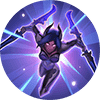
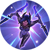
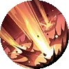
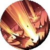

Leomord

The Oath Keeper
Leomord's Basic Attacks are guaranteed to critically strike against enemies below 35% Max HP, dealing 200% damage.
Momentum
Leomord gains a 150 (+150% Total Physical Attack) shield and begins channeling [for 1 second], slowing enemies in the target direction by 25%. When the channeling is complete or interrupted, he thrusts his sword in the same direction, dealing up to 500 (+180% Total Physical Attack) Physical Damage to enemies hit
Decimation Assault
Leomord quickly charge towards a designated direction, dealing 300 (+50% Total Physical Attack) Physical Damage to enemies near his path and destination and slowing them by 30% for 1s.
Phantom Steed
Leomord summons Barbiel to rush into the battlefield and knock back all enemies in its way, dealing 350 (+100% Total Physical Attack) Physical Damage to enemies on the path. If Barbiel comes in contact with Leomord, they will enter a mounted state.
Benedetta


Elapsed Daytime
Benedetta will use Swordout Slash in the direction she's facing and dash forward, dealing (+200% Total Physical Attack) Physical Damage (identified as Skill Damage and decays to 50% on minions and creeps) to enemies on the path.
Phantom Slash
Benedetta withdraws swiftly and leaves a shadow in front. After a short delay, her shadow slashes forward in a fan-shaped area, dealing 200–400 (+60% Total Physical Attack) Physical Damage and slowing the enemies by 60% for 0.5 seconds.
An Eye For An Eye
Benedetta raises her weapon to defend, gaining control immunity and blocking damage from any source for 0.8 seconds. After this, she stabs in the designated direction, dealing 300 (+80% Total Physical Attack) Physical Damage.
Alecto: Final Blow
Benedetta clenches Alecto and slashes forward after a short delay ( invincible while dashing), slowing all targets on the path by 70% for 1 second. After dashing, Benedetta detonates the Sword Intent on the path, strangling the enemy with the Sword Intent for 2.5 seconds, dealing 120–160 (+85% Extra Physical Attack) Physical Damage and slowing the enemy by 20% every 0.2 seconds.
Lancelot
Soul Cutter
Each time Lancelot [blinks or charges, his damage is increased by 7.5% for 4 seconds, up to 30%.
Puncture
Lancelot charges towards a targeted direction, dealing 100–250 (+50% Total Physical Attack) Physical Damage to enemies along the way and applying them with a Sword Mark to the first unmarked enemy hit. The Sword Mark lasts 5 seconds. If Lancelot successfully Sword Mark to an enemy, the cooldown of this will reset.
Thorned Rose
Lancelot strikes in the target direction 3 times, each time dealing 225–400 (+100% Extra Physical Attack) Physical Damage to enemies hit (damage reduced [to 30% ] when multiple enemies are hit.) Enemies in the center of the area will take all 3 hits and are slowed by 20% for 0.5 seconds.
Phantom Execution
After a short period[how long?] of charging, Lancelot performs an executioner's strike in a forward direction , dealing 400–800 (+150% Total Physical Attack) Physical Damage to his. He is invincible throughout the process.
Gusion

Dagger Specialist
Each time Gusion casts a skill, a rune will be added to Gusion's dagger. After stacking 3 runes, the next Basic Attack will deal (+100% Total Physical Attack) (+target's 15% Lost HP) Magic Damage , and restore HP equal to 80% of the damage dealt.
Sword Spike
Gusion throws a dagger in the targeted direction, dealing 200–300 (+50% Total Magic Power) Magic Damage to the first target hit.
ShadowBlade Slaughter
Gusion throws daggers forward, each dealing 110–210 (+50% Total Magic Power) Magic Damage to enemies hit and slowing them by 6% for 2 seconds (multiple daggers' slow effects can stack, up to 30%).
Incandescence
Gusion dashes to the targeted location, immediately reset the CD of Sword Spike and Shadowblade Slaughter.
Paquito

Champ Stance
After every 3 skill casts, Paquito enters Champ Stance, gaining an enhanced skill ignoring his current cooldowns . He gains 60% extra Movement Speed that decays over 2.5 seconds after casting the enhanced skill.
Heavy Left Punch
Paquito throws a punch in the target direction, dealing 210–360 (+50% Total Physical Attack) Physical Damage to enemies hit. He gains 150–500 (+110% Total Physical Attack) shield for 2.5 seconds if an enenmy hero is hit.
Jab
Paquito dashes in the target direction and throws a jab, dealing 150–450 (+150% Total Physical Attack) Physical Damage to enemies hit. Paquito deals no damage to enemies in his path but will stop and throw the jab early upon colliding within an enemy hero or creep.
Knockout Strike
Paquito launches an elbow strike in the target direction, dealing 250–350 (+50% Total Physical Attack) Physical Damage to enemies hit and knocking them back. He then throws a haymaker, dealing 350–600 (+100% Total Physical Attack) Physical Damage to enemies hit and slowing them by 75% for 1 second, as he darts backward.
Chou
Only Fast
After moving for 8 yards, Chou's next Basic Attack.png Basic Attack will deal 180% damage (can't ) and briefly slow enemies by 80%
Jeet Kune Do
Chou punches forward up to 3 times continuously. Each punch deals 180 / 200 / 220 / 240 / 260 / 280 (+70% Total Physical Attack) points of Physical Damage.
Shunpo
Chou dashes a short distance, becoming immune to CC effects during the dash.
The Way Of Dragon
Chou casts a roundhouse kick to knock back the target and deals 400 / 450 / 500 (+200% Extra Physical Attack) points of Physical Damage.
Claude
Battle Side by Side
Dexter launches an extra attack each time Claude's Basic Attack lands, dealing 20 (+35% Total Physical Attack) Physical Damage to the same target.
Art of Thievery
Claude attacks enemies in a fan-shaped area ahead, dealing 160–285 (+40% Total Physical Attack) Physical Damage and reducing their Movement Speed by 20% and Attack Speed by 10%.
Battle Mirror Image
Claude leaves a mirror image of Dexter at a designated location. Dexter’s mirror image automatically attacks enemies. Lasts 5.5 seconds. Claude can activate this skill again to switch places with the mirror image.
Blazing Duet
Claude and Dexter rapidly fire at the enemies nearby over 3 seconds, dealing 100–130 (+10% Total Physical Attack) Physical Damage to up to two targets each time they shoot. This skill benefits from Claude's Basic Attack effects and grants him a shield that can absorb 20 (+3% Total Physical Attack) damage.
Karina

 

Shadow Combo
Karina's third attack on the same target deals extra True Damage equal to 7 (+2% Total Magic Power)% of their lost HP plus 50. If the target is an enemy hero, her non-Ultimate skills' cooldowns will be reduced by 1.5 seconds.
Dance Of Blades
Karina keeps flourishing her twin blades as she enters the Dance of Blades state for up to 3.5 seconds. In this state, she increases her Movement Speed by 45% and blocks all Basic Attacks, dealing 100–200 (+30% Total Magic Power) Magic Damage at the attacker (throwing a Shadowblade if hit by a ranged attack, or launching a spinning slash at melee attackers. This effect has a built-in cooldown of 0.4 seconds).
Dance Of Death
Karina brandishes her twin blades, dealing 375–600 (+125% Total Magic Power) Magic Damage to surrounding enemies. slowing them by 30% for 1s.
Shadow Assault
Karina charges at the enemy hero, dealing 450–750 (+160% Total Magic Power) Magic Damage and inflicting a Shadow Mark upon it and leaving a Shadowform behind it, both lasting 5 seconds. This skill's cooldown is reset when a target with Shadow Mark dies.
Beatrix

Mechanical Genius
Her extraordinary talent in the field of mechanics allowed Beatrix to produce 4 weapon(s) of truly awe-inspiring firepower.
Masterful Gunner
Passive: Beatrix can carry 2 weapons at once, and increase her Physical Attack by 5–30. Active: Beatrix takes 0.6 second to swap her primary weapon with the secondary weapon she has slung over her back, gaining an all-new way to attack and Ultimate.
Tactical Reposition
Beatrix: drops and rolls forward (Renner); leaps and nimbly forward (Bennett); rolls ahead sideways (Wesker); slides forward (Nibiru) and fully reloads her current weapon.
Renner's Apathy
Beatrix wields Renner calmly upon the battlefield, aiming at the enemy. When releasing the skill, she deals 700–1200 (+280% Total Physical Attack) Physical Damage to the first enemy hit.
Yi Sun-shin
 

Dauntless Fleet
Yi Sun-Shin orders the Turtle Ship to charge towards the designated location, dealing 200 / 240 / 280 / 320 / 360 / 400 (+100% Total Physical Attack) Physical Damage to enemies in the area and stunning them for 1.2 seconds.
Traceless
Yi Sun-shin slashes forward with his glaive, dealing 150 / 180 / 210 / 240 / 270 / 300 (+40% Total Physical Attack) points of Physical Damage to enemies along the way.
Blood Floods
Without Charge/Instant Cast: Yi Sun-Shin slashes swiftly with his glaive, dealing 240 / 260 / 280 / 300 / 320 / 340 (+80% Total Physical Attack) Physical Damage.
Mountain Shocker
Yi Sun-shin summons the naval fleet to launch three waves of precise cannon attacks with each wave deals 150 / 180 / 210 (+50% Total Physical Attack) points of Physical Damagefor 2 seconds.